<!DOCTYPE lake>
<h2 data-lake-id="rQy2o" id="rQy2o"><span data-lake-id="uf1571a84" id="uf1571a84">学习目标</span></h2><ol list="u35c82c3e"><li data-lake-id="ue413a2bc" fid="ua7e24d14" id="ue413a2bc"><span data-lake-id="u03c2e472" id="u03c2e472">掌握hal库开发流程</span></li><li data-lake-id="uf2e1fc5c" fid="ua7e24d14" id="uf2e1fc5c"><span data-lake-id="ubab23192" id="ubab23192">掌握STMCubeMX配置过程</span></li><li data-lake-id="u243bad71" fid="ua7e24d14" id="u243bad71"><span data-lake-id="ue830dd8e" id="ue830dd8e">掌握API查询和使用方式</span></li></ol><h2 data-lake-id="WwgSy" id="WwgSy"><span data-lake-id="ud8e32704" id="ud8e32704">学习内容</span></h2><h3 data-lake-id="UfNPc" id="UfNPc"><span data-lake-id="u5ee3bf7a" id="u5ee3bf7a">需求</span></h3><p data-lake-id="u1cb0e042" id="u1cb0e042"><span data-lake-id="u7b29ba7d" id="u7b29ba7d">点灯PE3。</span></p><p data-lake-id="uae5d8d61" id="uae5d8d61">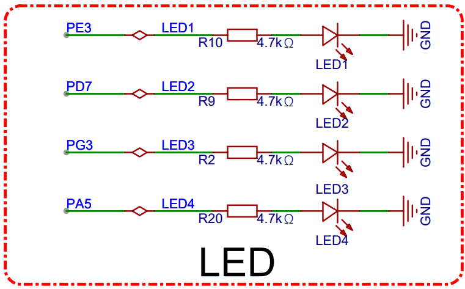</p><h3 data-lake-id="gHTow" id="gHTow"><span data-lake-id="u07320f3d" id="u07320f3d">开发流程</span></h3><ol list="ua231ec93"><li data-lake-id="ub227a17f" fid="ua82ea350" id="ub227a17f"><span data-lake-id="u71e14c09" id="u71e14c09">新建项目</span></li><li data-lake-id="u007687bf" fid="ua82ea350" id="u007687bf"><span data-lake-id="ub05ab7e6" id="ub05ab7e6">芯片配置</span></li><li data-lake-id="ud99c984a" fid="ua82ea350" id="ud99c984a"><span data-lake-id="ud9d3752a" id="ud9d3752a">编写代码</span></li><li data-lake-id="u66ef8d6b" fid="ua82ea350" id="u66ef8d6b"><span data-lake-id="u4d92ddac" id="u4d92ddac">测试调试</span></li></ol><h3 data-lake-id="IuDfU" id="IuDfU"><span data-lake-id="u77bac036" id="u77bac036">项目创建</span></h3><ol list="u8dc91832"><li data-lake-id="ud48b54c0" fid="ude950c69" id="ud48b54c0"><span data-lake-id="ue39e8b74" id="ue39e8b74">新建项目</span></li></ol><p data-lake-id="udaa00a67" id="udaa00a67" style="padding-left: 2em">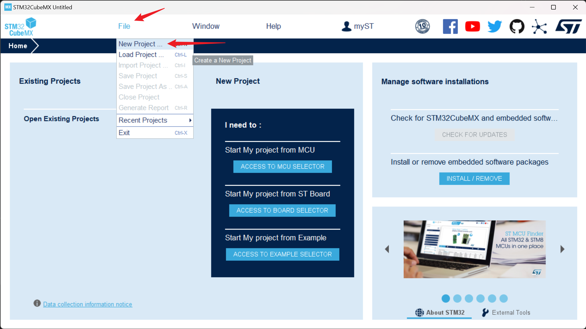</p><ol list="u5321cb59" start="2"><li data-lake-id="u4006ad71" fid="u36d49d32" id="u4006ad71"><span data-lake-id="ub406383f" id="ub406383f">选择芯片。输入自己使用的芯片。</span></li></ol><p data-lake-id="u48aec11e" id="u48aec11e" style="padding-left: 2em">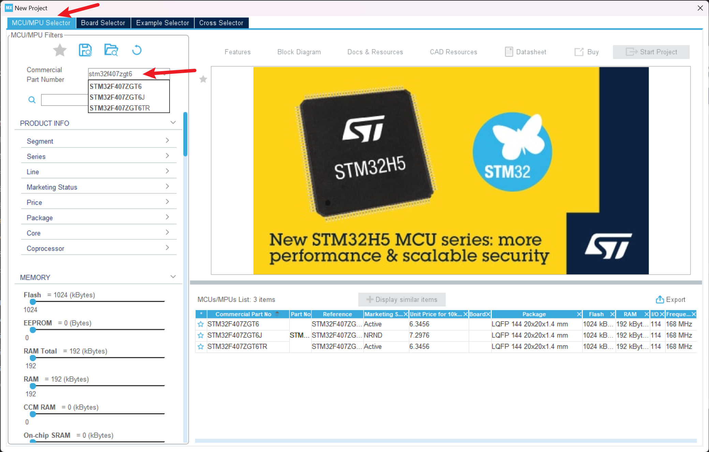</p><ol list="udfcfe441" start="3"><li data-lake-id="u4a5d08a4" fid="u2888ae63" id="u4a5d08a4"><span data-lake-id="u22f199d3" id="u22f199d3">选择芯片版本。</span></li></ol><p data-lake-id="u3b3c1d9c" id="u3b3c1d9c" style="padding-left: 2em">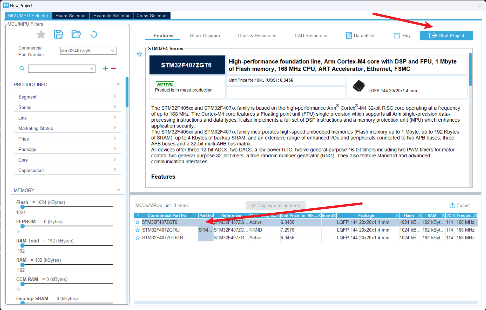</p><h3 data-lake-id="fL0bG" id="fL0bG"><span data-lake-id="u0702bb13" id="u0702bb13">芯片配置</span></h3><h4 data-lake-id="P2LeS" id="P2LeS"><span data-lake-id="uc05047c2" id="uc05047c2">功能配置</span></h4><p data-lake-id="u37ae002e" id="u37ae002e"><span data-lake-id="ua0088f05" id="ua0088f05">这里需求是点灯，配置相对简单。</span></p><ol list="ud63db965"><li data-lake-id="u869e9eb6" fid="ua029a621" id="u869e9eb6"><span data-lake-id="u501773e9" id="u501773e9">来到引脚配置页面。</span></li></ol><p data-lake-id="ue355a82d" id="ue355a82d" style="padding-left: 2em">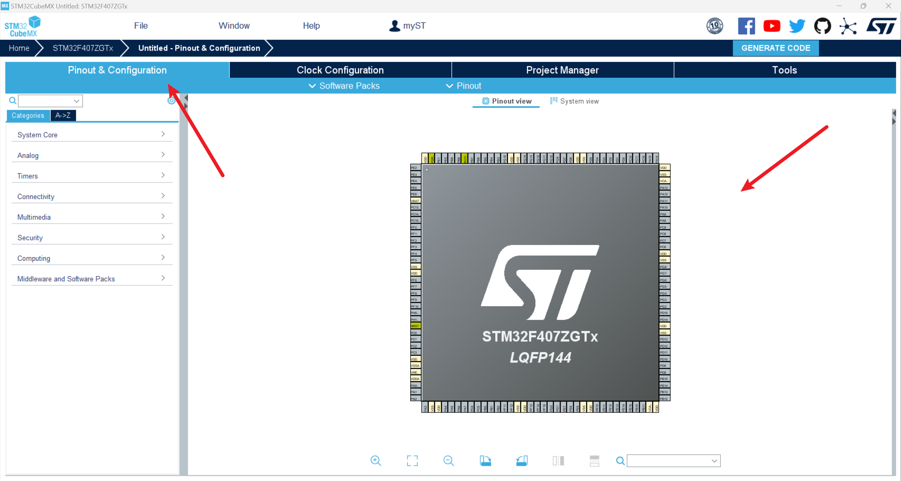</p><ol list="u3326c74d" start="2"><li data-lake-id="u8cf1f550" fid="ub7a5fce6" id="u8cf1f550"><span data-lake-id="ub21db2e8" id="ub21db2e8">找到具体的引脚。以点灯的PE3为例。</span></li></ol><p data-lake-id="uc50ac4d8" id="uc50ac4d8" style="padding-left: 2em">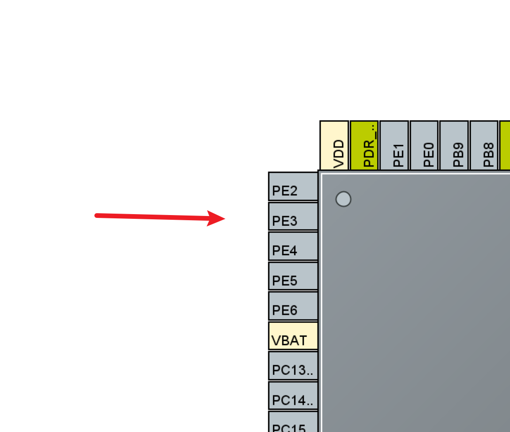</p><ol list="uc7b2d0a7" start="3"><li data-lake-id="u70736982" fid="ub18d28b3" id="u70736982"><span data-lake-id="u20513ada" id="u20513ada">配置功能。单击引脚。</span></li></ol><p data-lake-id="u70dd668b" id="u70dd668b" style="padding-left: 2em">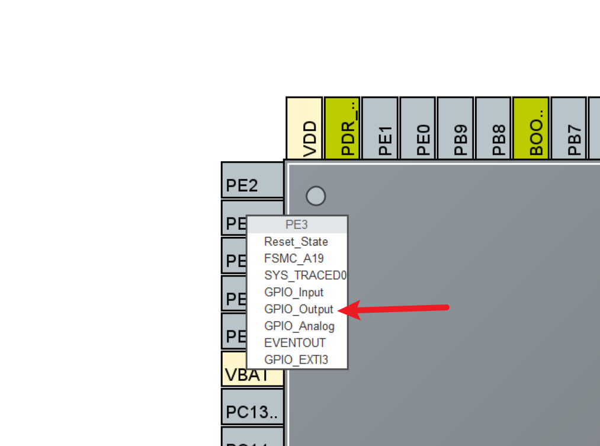</p><p data-lake-id="u73f1126e" id="u73f1126e" style="padding-left: 4em">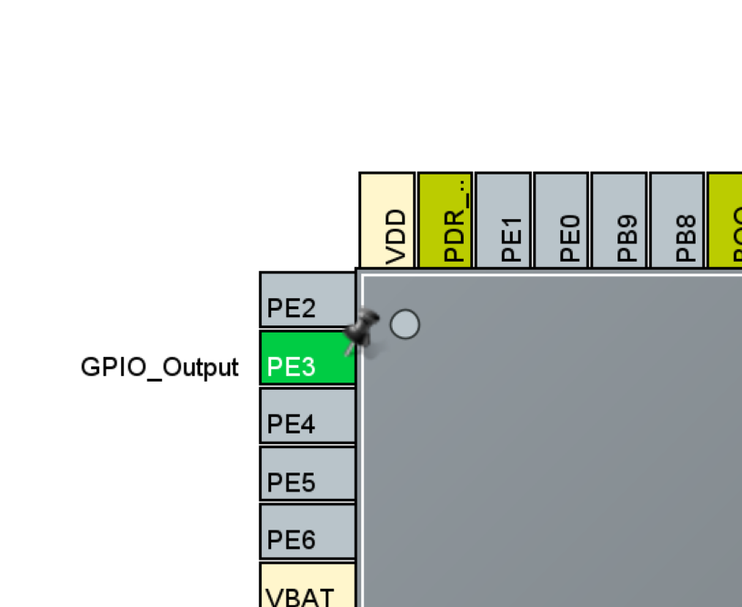</p><p data-lake-id="ud32d12ff" id="ud32d12ff"><br/></p><h4 data-lake-id="Sdm9S" id="Sdm9S"><span data-lake-id="uf1f80bf7" id="uf1f80bf7">项目配置</span></h4><ol list="u71ba07b1"><li data-lake-id="u6b5a3a5a" fid="u55cb2142" id="u6b5a3a5a"><span data-lake-id="u8a483bf6" id="u8a483bf6">项目基本配置</span></li></ol><p data-lake-id="u05cbbfb0" id="u05cbbfb0" style="padding-left: 2em">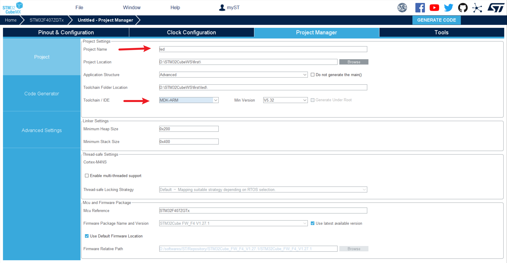</p><ol list="uc3a19552" start="2"><li data-lake-id="ub6227128" fid="ua2891788" id="ub6227128"><span data-lake-id="u522487e9" id="u522487e9">代码生成配置</span></li></ol><p data-lake-id="ua4c51730" id="ua4c51730" style="padding-left: 2em">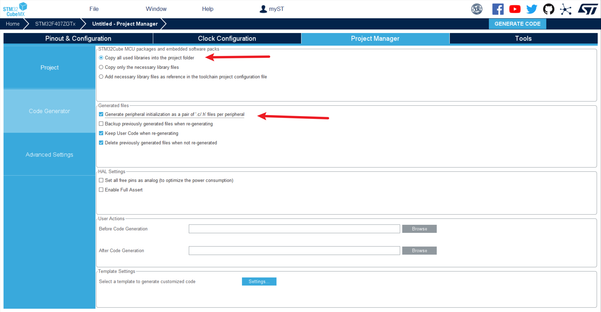</p><ol list="ue51c1a81" start="3"><li data-lake-id="u522c5df0" fid="u6f9a6915" id="u522c5df0"><span data-lake-id="u70a288c5" id="u70a288c5">生成代码</span></li></ol><p data-lake-id="uba08a0a8" id="uba08a0a8" style="padding-left: 2em">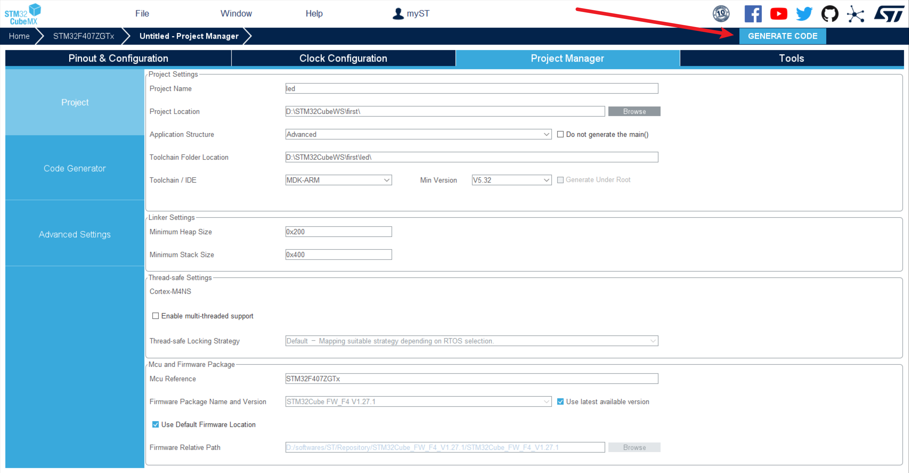</p><p data-lake-id="u5f142d45" id="u5f142d45" style="padding-left: 2em"><span data-lake-id="u6d3a9c71" id="u6d3a9c71">第一次使用这里会出现一些状况：需要下载依赖</span></p><p data-lake-id="ud9cf7ff7" id="ud9cf7ff7" style="padding-left: 2em">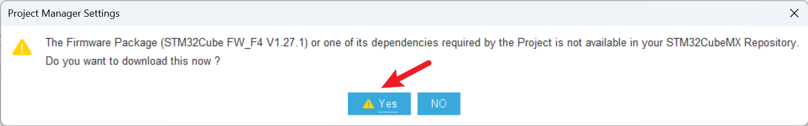</p><p data-lake-id="ue1f06fef" id="ue1f06fef" style="padding-left: 2em">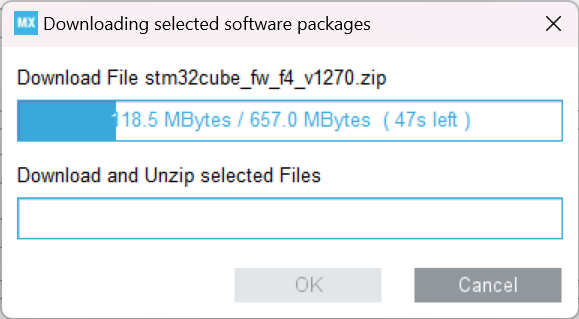</p><p data-lake-id="ub6eaa37a" id="ub6eaa37a" style="padding-left: 2em"></p><ol list="ue601da70" start="4"><li data-lake-id="u8f18cdcd" fid="u8d06d7b8" id="u8f18cdcd"><span data-lake-id="ua1326fc4" id="ua1326fc4">生成完成后。</span></li></ol><p data-lake-id="u77ac0097" id="u77ac0097" style="padding-left: 2em">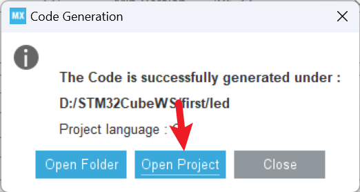</p><p data-lake-id="u380242c6" id="u380242c6" style="padding-left: 2em"><span data-lake-id="u948e0d1f" id="u948e0d1f">点击打开项目。自然会用keil打开。</span></p><p data-lake-id="u0744ed63" id="u0744ed63" style="padding-left: 2em"><span data-lake-id="ua58a4d43" id="ua58a4d43">​</span><br/></p><h3 data-lake-id="ASRre" id="ASRre"><span data-lake-id="u58ac6c05" id="u58ac6c05">编写代码</span></h3><p data-lake-id="uf4ff98fd" id="uf4ff98fd"><span data-lake-id="u66ec0b7c" id="u66ec0b7c">自动生成代码结构如下:</span></p><p data-lake-id="u0223f1e6" id="u0223f1e6">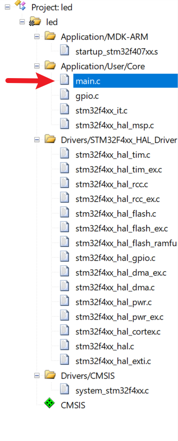</p><p data-lake-id="u69b1e650" id="u69b1e650"><span data-lake-id="u3c894151" id="u3c894151">我们对main.c进行编辑：</span></p><span class="yuque-card-unsupported">[codeblock]</span><p data-lake-id="u59ca75a1" id="u59ca75a1"><span data-lake-id="u0cf9bdd0" id="u0cf9bdd0">插入gpio控制代码</span></p><p data-lake-id="u6a375305" id="u6a375305"><span data-lake-id="ua0240ce1" id="ua0240ce1">​</span><br/></p><h3 data-lake-id="qpWAt" id="qpWAt"><span data-lake-id="u5d6e5939" id="u5d6e5939">编译测试</span></h3><p data-lake-id="ubeece2d4" id="ubeece2d4"><span data-lake-id="u9e144026" id="u9e144026">和spl库一样，进行编译，烧录，看效果。</span></p><p data-lake-id="u378742f6" id="u378742f6"><span data-lake-id="u52f87488" id="u52f87488">​</span><br/></p><p data-lake-id="u3fa29512" id="u3fa29512"><span data-lake-id="ucaf4fea7" id="ucaf4fea7">​</span><br/></p><h2 data-lake-id="AiJT7" id="AiJT7"><span data-lake-id="u7ee8bcc0" id="u7ee8bcc0">练习</span></h2><ol list="u3308fd5b"><li data-lake-id="u83a05806" fid="u6f34ac9d" id="u83a05806"><span data-lake-id="udf2057b9" id="udf2057b9">实现hal库点灯</span></li></ol>